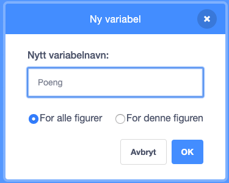

Vi skal lage et spill hvor katten Felix skal fange musa Herbert. Du
styrer Herbert med musepekeren og skal prøve å unngå å bli tatt av
Felix. Jo lenger du unngår ham jo flere poeng får du, men blir du
tatt, går poengsummen din ned.
Steg 1: Felix følger musepekeren
Vi ønsker at katten Felix skal følge etter musepekeren.
Sjekkliste
Start et nytt prosjekt.
Trykk på i i hjørnet av og
bytt navn på figuren til Felix.
Sørg for at Felix kun ser til høyre og venstre ved å sette
rotasjonsmåte til
.
Klikk på scenen ved siden av Felix i vinduet for figurer. Velg fanen
Bakgrunner og trykk på
for å
importere en ferdig bakgrunn. Velg den bakgrunnen du vil.
Klikk på Felix, velg Skript-fanen og lag dette
skriptet:
når grønt flagg klikkes
for alltid
pek mot [musepeker v]
gå (10) steg
neste drakt
trommeslag (3 v) som varer (0.25) takter
slutt
Test prosjektet
Klikk på det grønne flagget.
Følger Felix musepekeren?
Ser det ut som han går når han beveger seg?
Beveger han seg med riktig hastighet?
Klikk det røde stopp-symbolet for at Felix skal slutte å følge etter
musepekeren.
Lagre prosjektet
Scratch lagrer alle prosjektene dine automatisk med jevne mellomrom.
Det kan likevel være lurt å lagre manuelt innimellom.
I filmenyen, velg Lagre nå.
Steg 2: Felix jager Herbert
Nå ønsker vi at Felix skal jage musa Herbert i stedet for musepekeren.
Sjekkliste
Lag en ny figur ved å trykke på
og velg figuren Dyr/Mouse1.
Bytt navn på figuren til Herbert.
Gjør Herbert mindre enn Felix ved å trykke på
(øverst mot midten av vinduet). Prøv
seks klikk.
Gi Herbert dette skriptet:
når grønt flagg klikkes
for alltid
gå til [musepeker v]
pek mot [Felix v]
slutt
Test prosjektet
Klikk på det grønne flagget.
Flytter Herbert seg med musepekeren?
Jager Felix Herbert?
Steg 3: Felix sier når han har fanget Herbert
Vi vil at Felix skal vite når han har fanget Herbert og fortelle det
til oss.
Sjekkliste
Endre skriptet til Felix til dette:
når grønt flagg klikkes
for alltid
pek mot [musepeker v]
gå (10) steg
neste drakt
trommeslag (3 v) som varer (0.25) takter
hvis (berører [Herbert v]?)
si [Tok deg!] i (1) sekunder
slutt
slutt
Test prosjektet
Klikk på det grønne flagget.
Sier Felix fra når han har fanget Herbert?
Steg 4: Herbert blir et spøkelse når han fanges
I tillegg til at Felix sier noe, vil vi nå at Herbert blir forvandlet
til et spøkelse når han fanges.
Sjekkliste
Endre skriptet til Felix slik at det sender en melding og lager en
lyd når han fanger Herbert:
når grønt flagg klikkes
for alltid
pek mot [musepeker v]
gå (10) steg
neste drakt
trommeslag (3 v) som varer (0.25) takter
hvis (berører [Herbert v]?)
send melding [Fanget! v]
trommeslag (1 v) som varer (0.25) takter
si [Tok deg!] i (1) sekunder
vent (1) sekunder
slutt
slutt
Velg Herbert og gå til Drakter-fanen.
Hent en ny drakt ved å trykke på
og velg Fantasi/ghost2-a
Gjør drakten mindre ved å velge og
trykke seks ganger på spøkelsesdrakten.
Endre navnene på Herberts drakter slik at musedrakten heter
levende og spøkelsesdrakten heter død.
Gå til Skript-fanen, og lag et nytt skript for
Herbert for å gjøre ham om til et spøkelse. Ikke slett det gamle
skriptet:
når jeg mottar [Fanget! v]
bytt drakt til [død v]
vent (0.5) sekunder
bytt drakt til [levende v]
Test prosjektet
Klikk på det grønne flagget.
Forvandles Herbert til et spøkelse når han fanges?
Spiller Felix de riktige lydene til riktig tid?
Står Felix stille lenge nok til at Herbert kommer seg unna?
Steg 5: Telle poeng
La oss legge til en poengsum slik at vi kan se hvor flink man er til
å holde Herbert i live. Vi begynner med poengsummen null og øker den
med en for hvert sekund. Hvis Felix fanger Herbert, minker vi
poengsummen med ti.
Sjekkliste
På Skript-fanen under kategorien Data, lag en ny
variabel. Kall variabelen for Poeng, og la den gjelde for alle
figurer.

Legg merke til at Poeng0 dukket opp øverst til
venstre i spillet ditt.
Klikk på Scene til venstre på skjermen, ved siden av
Figurer. Lag disse to skriptene på scenen:
når grønt flagg klikkes
sett [Poeng v] til [0]
for alltid
vent (1) sekunder
endre [Poeng v] med (1)
slutt
når jeg mottar [Fanget! v]
endre [Poeng v] med (-10)
Test prosjektet
Klikk på det grønne flagget.
Øker poengsummen med en hvert sekund?
Går poengsummen ned med ti når Herbert blir fanget?
Hva skjer om Herbert fanges før du har ti poeng?
Går poengsummen tilbake til null når du starter spillet på nytt?
Lagre prosjektet
Du er ferdig. Godt gjort. Nå kan du spille spillet!
Du kan dele spillet med familie og venner ved å trykke Legg ut på
menylinjen.
Forbedre denne siden
Funnet en feil? Kunne noe vært bedre? Hvis ja, vennligst gi oss tilbakemelding ved å lage en sak på Github eller fiks feilen selv om du kan. Vi er takknemlige for enhver tilbakemelding!


 og
bytt navn på figuren til
og
bytt navn på figuren til  .
. for å
importere en ferdig bakgrunn. Velg den bakgrunnen du vil.
for å
importere en ferdig bakgrunn. Velg den bakgrunnen du vil. og velg figuren
og velg figuren  (øverst mot midten av vinduet). Prøv
seks klikk.
(øverst mot midten av vinduet). Prøv
seks klikk.